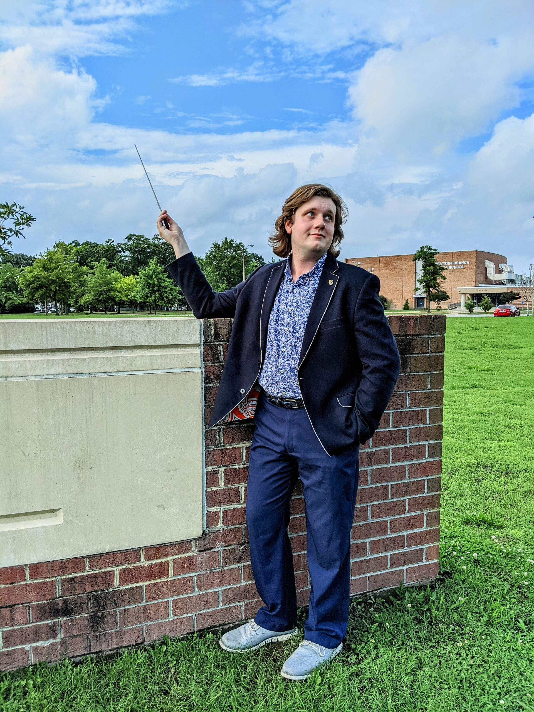
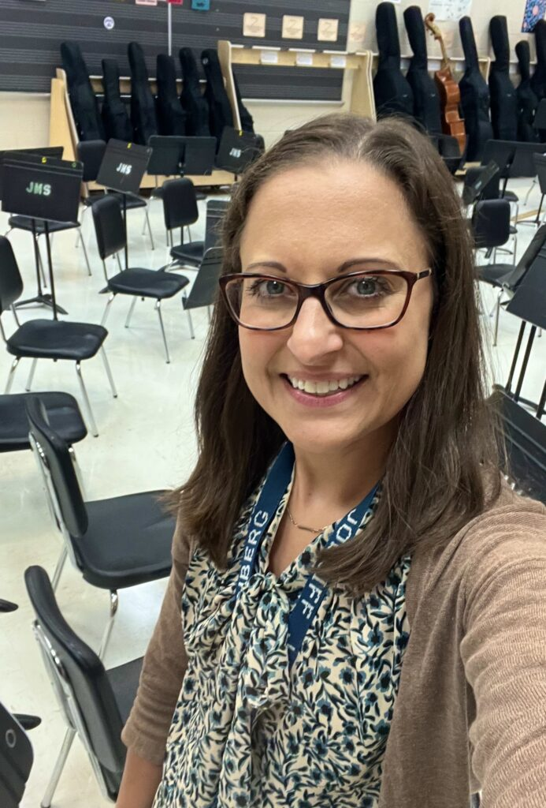

Ensemble
Blue & Gold Orchestra
Students continue developing string technique, musicianship, ensemble skills, and performance experience.
Western Branch Orchestras
Students develop musicianship, performance skills, and ensemble experience through orchestra programs at Jolliff Middle School and Western Branch High School.

Western Branch High School
Orchestra Coordinator
Western Branch High School provides students with opportunities to continue developing their musicianship, ensemble skills, and performance experience.
Students participate in orchestra ensembles designed to strengthen technique, musicianship, collaboration, and performance skills.
Ensemble
Students continue developing string technique, musicianship, ensemble skills, and performance experience.
Ensemble
Students build on previous orchestra experience through continued instruction, ensemble musicianship, and concert repertoire.
Ensemble
Students participate in advanced ensemble and performance opportunities within the Western Branch High School orchestra program.

Jolliff Middle School
Orchestra Director
Jolliff Middle School helps students build a foundation in string performance, music reading, rehearsal skills, and ensemble playing.
Students develop the skills and experience needed to grow as musicians and continue participating in orchestra throughout middle school and into high school.
Fundamentals
Students develop fundamental string technique, music reading skills, rehearsal habits, and proper instrument care.
Performance
Students develop ensemble skills and gain experience preparing and performing orchestra music together.
Development
Students strengthen their musicianship and prepare for continued participation in orchestra at Western Branch High School.